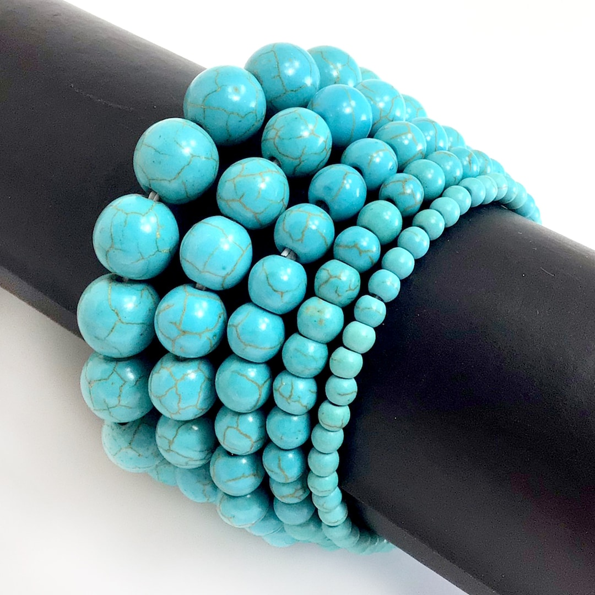
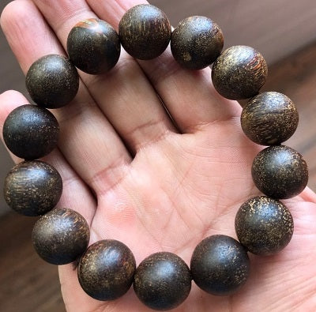

先看缺补
出生信息不是为了“下结论”，而是先判断五行气质偏向：例如金旺取火木、水旺取火土，用颜色和材质做第一层调和。
这里不是“算命式下结论”，而是把传统色彩象征、性格审美、兴趣爱好、预算和场景拆成几个推荐因子，帮助你更快缩小选择范围。
出生信息不是为了“下结论”，而是先判断五行气质偏向：例如金旺取火木、水旺取火土，用颜色和材质做第一层调和。
MBTI 和气质偏好用于判断你适合“低调耐看”还是“明艳出片”，避免材质对了但佩戴语气不对。
茶咖、香道、书画、旅行、手作等爱好会影响材质氛围，比如香道更适合沉香，极简更适合白玉和水晶。
通勤、商务、礼赠、收藏对应完全不同的形制和价格逻辑。先确定使用场景，比盲目追热门更稳。
预算、香味敏感、怕压手、低维护、第一次入门等会修正推荐，降低高门槛或高风险品类的优先级。
无需懂八字。不知道时辰也可以选择“粗略推荐”模式。
基于你的出生信息倾向、MBTI 与场景偏好,我们为你优选 3 个材质方向。
本推荐仅供审美、文化与内部交流参考,不构成命理承诺、鉴定结论或投资建议。高价文玩手串仍建议查看正规鉴定证书。
参考文玩女孩、多圈叠戴、新中式手串穿搭和五行配色笔记的视觉规律，页面图片会优先表达上身效果、色彩关系、生活场景和搭配公式。

手腕近景 · 单主视觉用单张主图判断颜色在手腕上的存在感：绿松石会更清爽、更有记忆点，适合想要一点小众辨识度的人。
不直接讲玄学结论，而是把五行缺补变成可感知的色彩和材质，用户更容易理解为什么推荐这一串。

茶席 · 书房 · 通勤沉香、紫檀这类材质更适合茶室、书房、通勤和近距离社交，图片要有慢生活和稳定感。
把“怎么搭”做成公式，比单张商品图更有参考价值；用户能直接照着搜索单品和组合。
每一类都附产区、价格影响因素、适合人群与保养注意。点击任意卡片展开详情。
先想清楚什么场合戴、想传达什么气质,材质和品类自然会收敛到合理的范围。